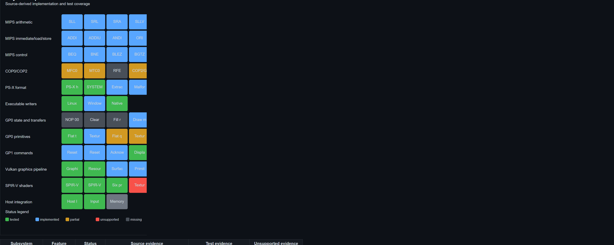

Commit 2b87ddf: source-derived implementation and test coverage.

| Subsystem | Feature | Status | Source evidence | Test evidence | Unsupported evidence |
|---|---|---|---|---|---|
| MIPS arithmetic | SLL | implemented | src/lowering/MipsLinuxLowerer.cpp:427 | - | - |
| MIPS arithmetic | SRL | implemented | src/lowering/MipsLinuxLowerer.cpp:429 | - | - |
| MIPS arithmetic | SRA | implemented | src/lowering/MipsLinuxLowerer.cpp:431 | - | - |
| MIPS arithmetic | SLLV | implemented | src/lowering/MipsLinuxLowerer.cpp:433 | - | - |
| MIPS arithmetic | SRLV | implemented | src/lowering/MipsLinuxLowerer.cpp:435 | - | - |
| MIPS arithmetic | SRAV | implemented | src/lowering/MipsLinuxLowerer.cpp:437 | - | - |
| MIPS arithmetic | ADD | implemented | src/lowering/MipsLinuxLowerer.cpp:439 | - | - |
| MIPS arithmetic | ADDU | implemented | src/lowering/MipsLinuxLowerer.cpp:441 | - | - |
| MIPS arithmetic | SUB | implemented | src/lowering/MipsLinuxLowerer.cpp:443 | - | - |
| MIPS arithmetic | SUBU | implemented | src/lowering/MipsLinuxLowerer.cpp:445 | - | - |
| MIPS arithmetic | AND | implemented | src/lowering/MipsLinuxLowerer.cpp:447 | - | - |
| MIPS arithmetic | OR | implemented | src/lowering/MipsLinuxLowerer.cpp:449 | - | - |
| MIPS arithmetic | XOR | implemented | src/lowering/MipsLinuxLowerer.cpp:451 | - | - |
| MIPS arithmetic | NOR | implemented | src/lowering/MipsLinuxLowerer.cpp:453 | - | - |
| MIPS arithmetic | SLT | implemented | src/lowering/MipsLinuxLowerer.cpp:455 | - | - |
| MIPS arithmetic | SLTU | implemented | src/lowering/MipsLinuxLowerer.cpp:457 | - | - |
| MIPS arithmetic | MULT | implemented | src/lowering/MipsLinuxLowerer.cpp:459 | - | - |
| MIPS arithmetic | MULTU | implemented | src/lowering/MipsLinuxLowerer.cpp:461 | - | - |
| MIPS arithmetic | DIV | implemented | src/lowering/MipsLinuxLowerer.cpp:463 | - | - |
| MIPS arithmetic | DIVU | implemented | src/lowering/MipsLinuxLowerer.cpp:463 | - | - |
| MIPS arithmetic | MFHI | implemented | src/lowering/MipsLinuxLowerer.cpp:468 | - | - |
| MIPS arithmetic | MFLO | implemented | src/lowering/MipsLinuxLowerer.cpp:472 | - | - |
| MIPS arithmetic | MTHI | implemented | src/lowering/MipsLinuxLowerer.cpp:470 | - | - |
| MIPS arithmetic | MTLO | implemented | src/lowering/MipsLinuxLowerer.cpp:474 | - | - |
| MIPS immediate/load/store | ADDI | implemented | src/lowering/MipsLinuxLowerer.cpp:855 | - | - |
| MIPS immediate/load/store | ADDIU | implemented | src/lowering/MipsLinuxLowerer.cpp:857 | - | - |
| MIPS immediate/load/store | ANDI | implemented | src/lowering/MipsLinuxLowerer.cpp:859 | - | - |
| MIPS immediate/load/store | ORI | implemented | src/lowering/MipsLinuxLowerer.cpp:861 | - | - |
| MIPS immediate/load/store | XORI | implemented | src/lowering/MipsLinuxLowerer.cpp:863 | - | - |
| MIPS immediate/load/store | LUI | implemented | src/lowering/MipsLinuxLowerer.cpp:853 | - | - |
| MIPS immediate/load/store | LB | implemented | src/lowering/MipsLinuxLowerer.cpp:91 | - | - |
| MIPS immediate/load/store | LH | implemented | src/lowering/MipsLinuxLowerer.cpp:91 | - | - |
| MIPS immediate/load/store | LW | implemented | src/lowering/MipsLinuxLowerer.cpp:91 | - | - |
| MIPS immediate/load/store | LBU | implemented | src/lowering/MipsLinuxLowerer.cpp:92 | - | - |
| MIPS immediate/load/store | LHU | implemented | src/lowering/MipsLinuxLowerer.cpp:92 | - | - |
| MIPS immediate/load/store | SB | implemented | src/lowering/MipsLinuxLowerer.cpp:92 | - | - |
| MIPS immediate/load/store | SH | implemented | src/lowering/MipsLinuxLowerer.cpp:93 | - | - |
| MIPS immediate/load/store | SW | implemented | src/lowering/MipsLinuxLowerer.cpp:93 | - | - |
| MIPS immediate/load/store | LWL | implemented | src/lowering/MipsLinuxLowerer.cpp:1148 | - | - |
| MIPS immediate/load/store | LWR | implemented | src/lowering/MipsLinuxLowerer.cpp:1148 | - | - |
| MIPS control | BEQ | implemented | src/lowering/MipsLinuxLowerer.cpp:102 | - | - |
| MIPS control | BNE | implemented | src/lowering/MipsLinuxLowerer.cpp:102 | - | - |
| MIPS control | BLEZ | implemented | src/lowering/MipsLinuxLowerer.cpp:103 | - | - |
| MIPS control | BGTZ | implemented | src/lowering/MipsLinuxLowerer.cpp:103 | - | - |
| MIPS control | J | implemented | src/lowering/MipsLinuxLowerer.cpp:107 | - | - |
| MIPS control | JAL | implemented | src/lowering/MipsLinuxLowerer.cpp:107 | - | - |
| MIPS control | JR | implemented | src/lowering/MipsLinuxLowerer.cpp:108 | - | - |
| MIPS control | JALR | implemented | src/lowering/MipsLinuxLowerer.cpp:109 | - | - |
| MIPS control | SYSCALL | tested | src/lowering/MipsLinuxLowerer.cpp:110 | tests/RelinkerTest.cpp:213 | - |
| MIPS control | BREAK | implemented | src/lowering/MipsLinuxLowerer.cpp:110 | - | - |
| COP0/COP2 | MFC0 | partial | src/lowering/MipsLinuxLowerer.cpp:490 | - | - |
| COP0/COP2 | MTC0 | partial | src/lowering/MipsLinuxLowerer.cpp:490 | - | - |
| COP0/COP2 | RFE | missing | - | - | - |
| COP0/COP2 | COP2/GTE | partial | src/lowering/MipsLinuxLowerer.cpp:511 | - | - |
| COP0/COP2 | COP1 | implemented | src/lowering/MipsLinuxLowerer.cpp:106 | - | - |
| COP0/COP2 | COP3 | implemented | src/lowering/MipsLinuxLowerer.cpp:836 | - | - |
| PS-X format | PS-X header | tested | src/format/PsExe.cpp:49 src/format/PsExe.cpp:75 | tests/test_psx_exe.py:34 tests/RelinkerTest.cpp:92 | - |
| PS-X format | SYSTEM.CNF boot | tested | src/format/PsExe.cpp:22 src/format/PsExe.cpp:28 | tests/RelinkerTest.cpp:43 | - |
| PS-X format | Extracted directory | implemented | src/format/PsExe.cpp:103 src/format/PsExe.cpp:52 | - | - |
| PS-X format | Malformed header | implemented | src/relinker/Relinker.cpp:56 src/relinker/Relinker.cpp:49 | - | - |
| Executable writers | Linux ELF | tested | src/lowering/MipsLinuxLowerer.cpp:38 src/executable/ElfWriter.cpp:218 | tests/RelinkerTest.cpp:174 | - |
| Executable writers | Windows PE | implemented | src/executable/PeWriter.cpp:107 src/lowering/MipsWindowsLowerer.cpp:203 | - | - |
| Executable writers | Native diagnostics | tested | src/lowering/MipsLinuxLowerer.cpp:231 src/lowering/MipsLinuxLowerer.cpp:268 src/lowering/MipsWindowsLowerer.cpp:423 | tests/RelinkerTest.cpp:73 | - |
| GP0 state and transfers | NOP 00 | missing | - | - | - |
| GP0 state and transfers | Clear cache 01 | missing | - | - | - |
| GP0 state and transfers | Fill rectangle 02 | missing | - | - | - |
| GP0 state and transfers | Draw mode E1 | implemented | src/gpu/Graphics.cpp:239 | - | - |
| GP0 state and transfers | Draw area start E2 | tested | src/gpu/Graphics.cpp:264 | tests/GraphicsTest.cpp:140 | - |
| GP0 state and transfers | Draw area end E3 | tested | src/gpu/Graphics.cpp:265 | tests/GraphicsTest.cpp:141 | - |
| GP0 state and transfers | Draw offset E4 | tested | src/gpu/Graphics.cpp:288 | tests/GraphicsTest.cpp:142 | - |
| GP0 state and transfers | Mask bits E5-E6 | partial | src/gpu/Graphics.cpp:305 | - | - |
| GP0 state and transfers | CPU to VRAM A0 | tested | src/gpu/Graphics.cpp:439 | tests/GraphicsTest.cpp:143 | - |
| GP0 state and transfers | VRAM to CPU C0 | tested | src/gpu/Graphics.cpp:465 | tests/GraphicsTest.cpp:148 | - |
| GP0 state and transfers | VRAM copy 80 | implemented | src/gpu/Graphics.cpp:482 | - | - |
| GP0 primitives | Flat triangle 20-23 | tested | src/gpu/Graphics.cpp:311 | tests/GraphicsTest.cpp:27 | - |
| GP0 primitives | Textured triangle 24-27 | implemented | src/gpu/Graphics.cpp:326 | - | - |
| GP0 primitives | Flat quad 28-2B | partial | src/gpu/Graphics.cpp:348 | - | - |
| GP0 primitives | Textured quad 2C-2F | partial | src/gpu/Graphics.cpp:350 | - | - |
| GP0 primitives | Shaded triangle 30-33 | missing | - | - | - |
| GP0 primitives | Shaded textured triangle 34-37 | missing | - | - | - |
| GP0 primitives | Shaded quad 38-3B | missing | - | - | - |
| GP0 primitives | Shaded textured quad 3C-3F | missing | - | - | - |
| GP0 primitives | Line 40-43 | implemented | src/gpu/Graphics.cpp:410 | - | - |
| GP0 primitives | Polyline 48-4B | partial | src/gpu/Graphics.cpp:414 | - | - |
| GP0 primitives | Shaded line 50-53 | partial | src/gpu/Graphics.cpp:418 | - | - |
| GP0 primitives | Shaded polyline 58-5B | partial | src/gpu/Graphics.cpp:422 | - | - |
| GP0 primitives | Variable rectangle 60-63 | partial | src/gpu/Graphics.cpp:400 | - | - |
| GP0 primitives | Fixed sprite 64-7F | partial | src/gpu/Graphics.cpp:361 | - | - |
| GP1 commands | Reset GPU 00 | implemented | src/gpu/Graphics.cpp:159 | - | - |
| GP1 commands | Reset FIFO 01 | implemented | src/gpu/Graphics.cpp:166 | - | - |
| GP1 commands | Acknowledge IRQ 02 | implemented | src/gpu/Graphics.cpp:171 | - | - |
| GP1 commands | Display enable 03 | tested | src/gpu/Graphics.cpp:176 | tests/GraphicsTest.cpp:22 | - |
| GP1 commands | DMA direction 04 | tested | src/gpu/Graphics.cpp:183 | tests/GraphicsTest.cpp:154 | - |
| GP1 commands | Display origin 05 | tested | src/gpu/Graphics.cpp:190 | tests/GraphicsTest.cpp:23 | - |
| GP1 commands | Horizontal range 06 | implemented | src/gpu/Graphics.cpp:201 | - | - |
| GP1 commands | Vertical range 07 | tested | src/gpu/Graphics.cpp:207 | tests/GraphicsTest.cpp:24 | - |
| GP1 commands | Display mode 08 | partial | src/gpu/Graphics.cpp:215 | - | - |
| Vulkan graphics pipeline | Graphics IR | tested | src/gpu/Graphics.cpp:146 | tests/GraphicsTest.cpp:38 | - |
| Vulkan graphics pipeline | Resource plan | tested | src/gpu/Graphics.cpp:507 | tests/GraphicsTest.cpp:46 | - |
| Vulkan graphics pipeline | Surface and swapchain | implemented | src/gpu/Graphics.cpp:665 | - | - |
| Vulkan graphics pipeline | Primitive pipelines | implemented | src/gpu/Graphics.cpp:1121 | - | - |
| Vulkan graphics pipeline | Shader stage attachment | unsupported | src/gpu/Graphics.cpp:1130 | - | src/gpu/Graphics.cpp:1132 |
| Vulkan graphics pipeline | Rasterization | unsupported | src/gpu/Graphics.cpp:1107 | - | src/gpu/Graphics.cpp:1107 |
| Vulkan graphics pipeline | Draw command submission | missing | - | - | - |
| Vulkan graphics pipeline | Present swapchain | implemented | src/gpu/Graphics.cpp:1162 | - | - |
| SPIR-V shaders | SPIR-V emitter | tested | src/gpu/Graphics.cpp:548 | tests/GraphicsTest.cpp:83 | - |
| SPIR-V shaders | SPIR-V structural validation | tested | src/gpu/Graphics.cpp:538 | tests/GraphicsTest.cpp:107 | - |
| SPIR-V shaders | Six primitive variants | tested | src/gpu/Graphics.cpp:580 | tests/GraphicsTest.cpp:134 | - |
| SPIR-V shaders | Texture sampling | unsupported | src/gpu/Graphics.cpp:548 | - | src/gpu/Graphics.cpp:553 |
| SPIR-V shaders | Semi-transparent blending | unsupported | src/gpu/Graphics.cpp:548 | - | src/gpu/Graphics.cpp:554 |
| SPIR-V shaders | Vertex shader | missing | - | - | - |
| SPIR-V shaders | Fragment shader implementation | partial | src/gpu/Graphics.cpp:558 | - | - |
| Host integration | Host I/O | tested | src/host/HostServices.cpp:1 src/host/HostServices.cpp:75 | tests/HostIntegrationTest.cpp:2 | - |
| Host integration | Input mapping | tested | src/input/Input.cpp:69 src/input/Input.cpp:3 | tests/InputTest.cpp:1 tests/CMakeLists.txt:83 | - |
| Host integration | Memory card | not applicable | - | - | - |